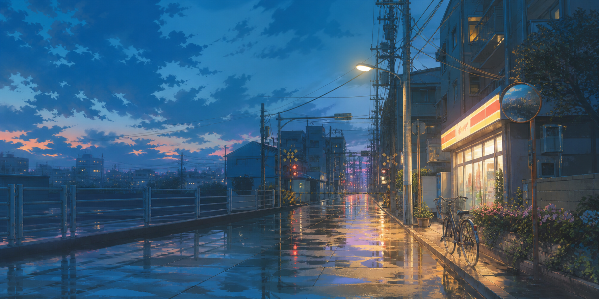

NOW2026好きNOW2026好き
NOW2026好きNOW2026好きSCROLL
THIS IS NOT A RÉSUMÉ不是为了证明什么，
不是为了证明什么，
只是想把时间留下。
这个网站会慢慢装进照片、文字、书籍、动画、音乐和一些无法分类的小事。它不追求每天更新，而是希望多年以后仍能舒服地翻阅。
01 / VISUAL DIARY
查看全部 ↗生活切片

雨后的蓝色时刻
没有特别的目的，只是慢慢走回家。
夏日下午
光落在桌面上的形状。
近期碎片
动画、音乐与一张没有说明的照片。
角色占位
以后会替换成真正属于你的形象。
按住并左右拖动 · DRAG TO EXPLORE
02 / TIME ARCHIVE
进入时间线 ↗年份档案
03 / READING NOTES读过的文字，
进入私人书架
读过的文字，
也在改变我。
进入私人书架04 / FAVORITES
打开收藏柜 ↗